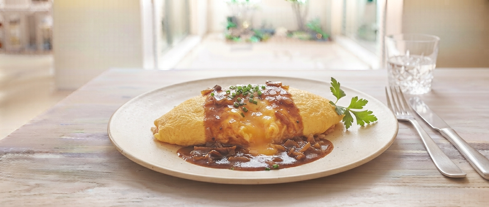
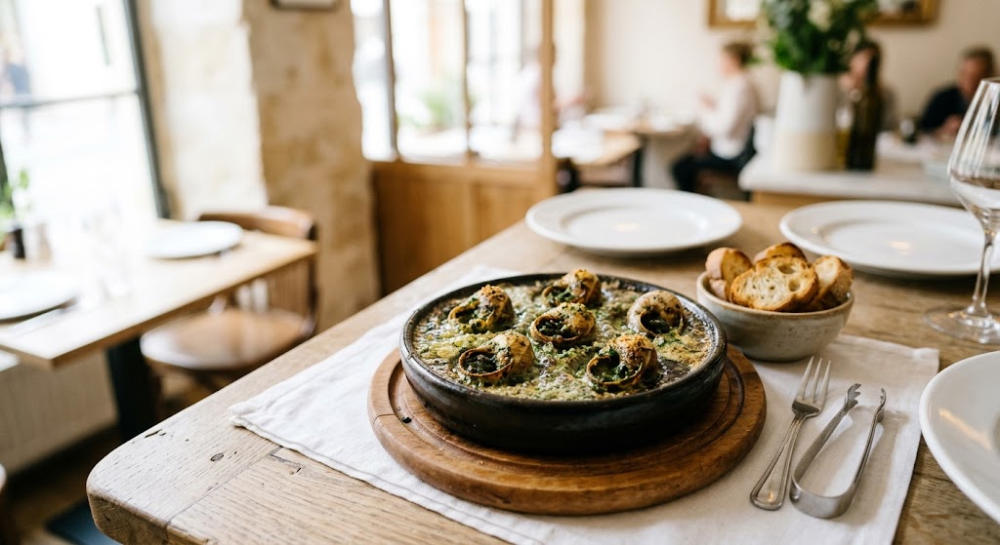

Scroll
かつて西大通りで灯した火は、
今、星が丘の静かな住宅街で穏やかに揺れています。
純白のテーブルクロスに、シャンソンの調べ。
大切な人と、あるいは自分へのご褒美に、
心解けるひとときをお過ごしください。

モンパリが長年提供し続けている、自慢の逸品です。
ガーリックとバターの香りが食欲をそそり、ワインとの相性も抜群。
「ここに来たら、まずはこれ」と仰っていただく、常連様に愛される味をぜひご賞味ください。
「何から頼めばいいか迷ってしまう」という初めてのお客様のために、創業35年の歴史とこだわりを贅沢に詰め込んだ特別メニューをご用意いたしました。
名物の「エスカルゴのオーブン焼き」、粉とバターから丁寧にお仕立てした秘伝のスープ、柔らかく仕上げた自慢の一品に、食後のクリームブリュレまで。モンパリの“真骨頂”を一心にお楽しみいただける特別なひと皿です。
【初来店おすすめ構成】
名物エスカルゴ / 本日のポタージュ / 特製メインディッシュ / 純白クロスのパン / 選べる自家製デザート / 食後の珈琲
一皿ごとに受け継がれる
手作りの情熱と優しさ
「帰省した時だけでなく、自宅でもあの味を食べたい」
そんなありがたいお声にお応えし、お店の味をそのまま真空・冷凍でお届けするお取り寄せサービスを順次準備しております。
手作りのカレーソースやエスカルゴバターをご家庭の食卓で。
住宅街に佇む隠れ家。シャンソンの流れる落ち着いた空間で、会話と食事に集中できます。
レトルトは一切使いません。粉とバターから練り上げるソースは、35年守り続ける誇りです。
花巻産の「ひえ」や地元野菜。この土地ならではの洋食を、リーズナブルに楽しめます。
「柔らかく優しい味のオムライス。デザートのブリュレを頂くと、まるで春の水辺を歩いているような心地よさに包まれます。母の誕生日も、ここで過ごして本当に良かった。」
— 帰省のたびにお寄りいただくお客様より
「清潔感のあるお店で、いい意味でのレトロ感がある。スープからデザートまで付いてこのお値段は素晴らしい。次回は違うデザートを頼もうと思います。」
— 初めてご来店いただいたお客様より
特別な一日のために、お席をご用意いたします。
お電話でのご予約・お問合せ
0198-24-7947
受付時間：11:30〜14:00（水曜定休）